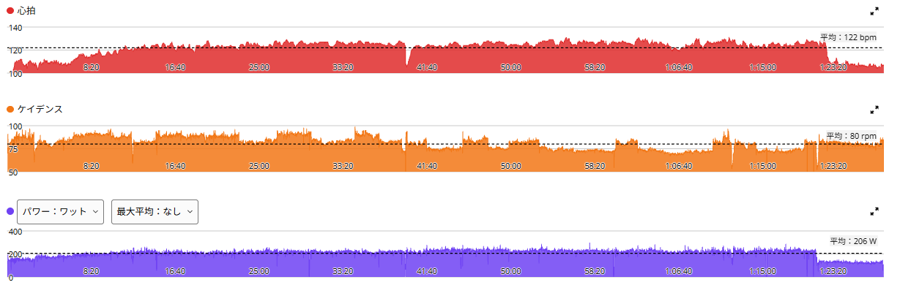
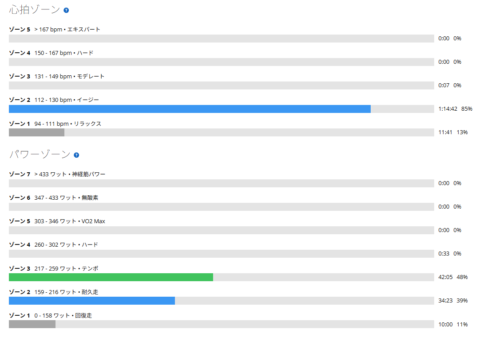

220Wを70分。苦手な高ケイデンスにも挑戦してみた
昨日は太平→琴平→唐沢を走って、TSSは144.5。かなりしっかり踏んだ翌日なので、今日はローラーで普段のベース走を少し延長することにした。私のローラーでの定番は220W×60分。AIからの提案は、これを70分に伸ばしてみようというものだった。
220WはFTP289Wの約76％。数字だけなら極端な高強度ではない。でも、私にとっては決して「楽勝」というわけでもない。じっくり踏み続けると、ちゃんと疲れる。

70分走はほぼ狙いどおり
ウォームアップを10分ほど行ってから、メインの70分へ。狙いの220Wに対して平均219W。しかもメインの平均パワーとNPがどちらも219Wで、出力はかなり安定していた。
| メイン | 11月12日 | 今日 |
|---|---|---|
| 時間 | 60分 | 70分 |
| 平均パワー | 220W | 219W |
| NP | 221W | 219W |
| 心拍平均／最大 | 121／129bpm | 125／131bpm |
| ケイデンス | 75rpm | 80rpm |
ほぼ同じ出力のまま、前回より10分延長できた。
苦手な高ケイデンスを意識してみる
前回のローラーでは、ケイデンスが75rpmと低めだった。私はもともと、ローラーで高回転のまま220Wを維持するのがあまり得意ではない。回転数を上げるより、少し重めのギアをじっくり踏む方が安定する。ただ、いつも同じ踏み方ばかりでは芸がない。今回は高ケイデンスも意識してみた。
開始から30分ほどは、普段より回転数を高くするように心がけた。少し大変ではあったけれど、やってみると案外できる。その後はケイデンスを落として、いつもの踏み方に戻した。結果、メインの平均ケイデンスは80rpm。前回より5rpm上がった。無理に回す必要はないと思うけれど、「苦手だから無理」と決めつけずに試してみたのは収穫だった。
前回より長いのに、少し楽だった
今日も後半になると、さすがにじわじわときつくなった。70分間踏む以上、何も感じないわけではない。それでも、全体としては前回の60分走の方がつらかった気がする。昨日の太平→琴平→唐沢の疲労も、今日は特に感じなかった。身体の調子は良く、メニューも問題なく完遂。
もちろん、たった2回の比較で劇的に成長したとは言えない。ただ、220Wで踏み続けることに少し慣れてきた感覚はある。AIにもそのことを伝えた。
パワーを上げるだけが成長ではない
AIの「収穫です」は、今回は珍しく、言われてみればそのとおりだと思った。パワーを1Wでも上げることばかりが成長ではないらしい。心拍が4bpm高いのは、時間と回転数の分もあるだろう。次に同じ条件で比べてみる。

心拍の平均は全体で122bpm。心拍ゾーン2の滞在時間は約1時間15分だった。出力の割に心拍が低めという傾向は以前から少し気になっているが、今は結論を急がず、記録を積み重ねていくつもりだ。
約42km・NP212W・TSS77
- 全体41.50km / 1時間27分02秒
- 負荷平均206W / NP212W / IF0.732 / TSS77.4 / FTP設定289W
- 心拍・回転平均122bpm / 平均80rpm
ローラーの後はMTBでお出かけ
ちなみに、ローラーを終えた後は用事があったのでMTBで出かけた。こちらは28.84km、走行時間1時間16分56秒、平均心拍115bpm。トレーニングというより移動がメインの低強度ライドだ。ローラーと合わせると、今日の自転車の走行距離は70.34km。思ったより自転車に乗った一日になった。
地味だけれど、悪くない一日
今日の主役は、220Wを70分間維持できたこと。そして、苦手だった高ケイデンスにも少し挑戦できたことだ。後半はきつかった。でも前回ほどではなく、脚にも大きな問題はなかった。
富士ヒルゴールドへの道は、毎回派手な自己ベストが出るわけではない。こんなふうに、いつもの出力を少し長く、少し違う踏み方で維持できるようになる日も、きっと大事なのだと思う。地味だけれど、悪くない一日だった。